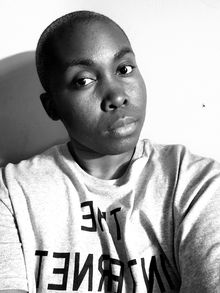

About Me
Creator, problem solver, innovator, are just a few ways to describe me.
I am a Web Developer, who resides in the the Washington, D.C. area. I enjoy collaborating on projects and seeing different points of view. I also like to add my artsy flair on my projects.
I am passionate about figuring out how every piece of the puzzle fits to make a whole.
If I'm not coding, I am most likely:
Making a playlist (huge music enthusiast).
Catching up on the latest Netflix show.
Playing games on the Nintendo Switch.